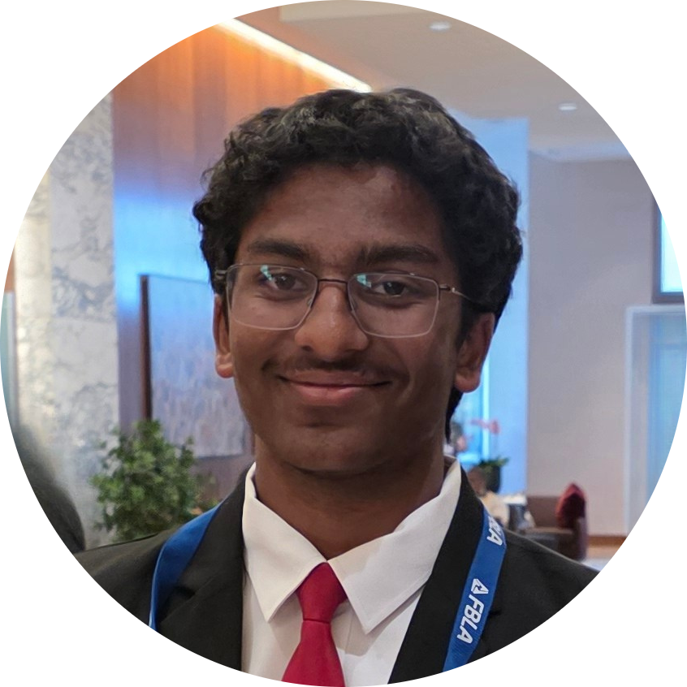

About Us
Who are we? We are Kinsey and Krishav, two friends who are both sophomores in Inglemoor and Bothell High Schools respectively, of the Northshore School District. We have both always been fascinated with science from a young age, and that has not changed.

Kinsey
Inglemoor High School

Krishav
Bothell High School
How It Started
Kinsey’s dad started the original Exploring Science Night (ESN) while he and his older brother were in elementary school. It all stems from a couple of different things, such as a laser for a science fair project, or a Mentos geyser kit, or just toys bought for fun, before being assembled into a full kit. Then, the global Coronavirus pandemic hit, and by the time ESN could’ve been restarted, Kinsey was out of elementary school and it all fell apart.
Our Mission
Now, the two of us are restarting it, bigger and better than ever before, and hope to expand our influence to all across the Seattle region, and potentially even the country or world, by inspiring others to assemble their own kits.
We both know that being exposed to science from a young age can shape your future career and interests, and therefore ask that you help us in spreading breathtaking experiments and demonstrations to as many elementary schoolers as possible.
How You Can Help
Anyone and everyone can help, and we sincerely appreciate any and all assistance in all manners, whether that means helping bring our kit to schools near you or helping add to it, or better yet, starting your own!
Contact Us